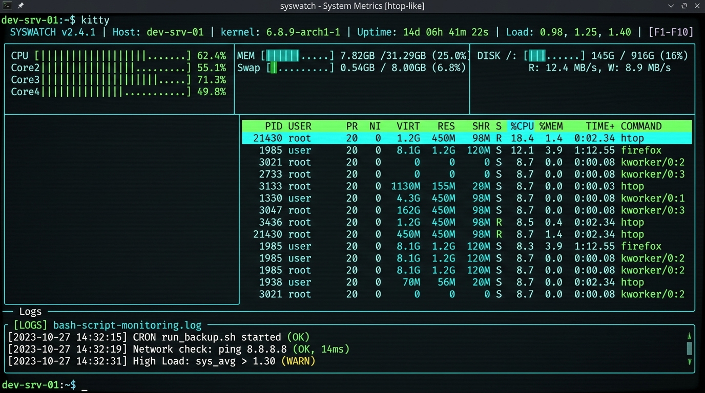

monitoring.sh snippet
#!/bin/bash
# Scheduled execution via cron at midnight
LOGFILE="/var/log/system_monitor_$(date +%F).log"
echo "[$(date '+%Y-%m-%d %H:%M:%S')] CPU: $(top -bn1 | grep 'Cpu(s)')" >> $LOGFILE
echo "[$(date '+%Y-%m-%d %H:%M:%S')] MEM: $(free -h | awk '/Mem:/ {print $3 "/" $2}')" >> $LOGFILE
Linux Automation • DevOps
AWS EC2 Verified
Shell Scripting with AWS EC2, Bash & Git
Linux System Resource Monitoring & Automated Logging
A Linux automation project built using Bash to continuously inspect server health, calculate CPU and memory consumption, monitor disk partition thresholds, and write timestamped diagnostic logs.
KEY HIGHLIGHTS:
- ▸Bash script named
monitoring.shengineered for unattended execution and robust error handling. - ▸Scheduled execution using cron configured to trigger midnight health snapshots automatically.
- ▸System resource monitoring tracking memory buffers, root filesystem capacity, and CPU idle percentages into structured logs.
- ▸Git version control maintaining clear branching and revision logs for all automation scripts.
- ▸AWS EC2 environment deployment verifying cloud-hosted Linux instance operational telemetry.